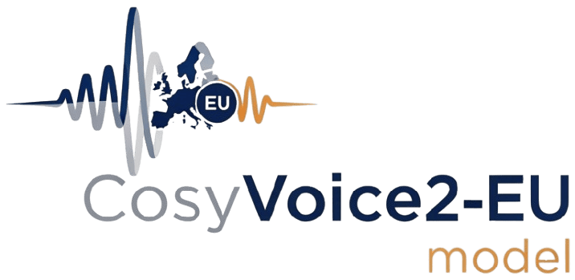

Data-Efficient Adaptation for French and German Zero-Shot TTS
A rigorous, reproducible ablation study fine-tuning key components of CosyVoice2 across data budgets and language regimes — setting a new standard for multilingual TTS research with backbone-agnostic LoRA adaptation.
Systematic fine-tuning of CosyVoice2 for European languages — transparent, reproducible, and backbone-agnostic.
While generative TTS excels in English and Chinese, high-quality, expressive synthesis for European languages like French and German is underexplored in open-source systems.
A rigorous, reproducible ablation grid fine-tuning key components of CosyVoice2 across data budgets and language regimes. Backbone-agnostic refactor unlocks plug-and-play LLMs and efficient LoRA adaptation.
One of the first systematic open, component-level benchmarks of adapting a modern generative TTS to European languages — enabling transparent reproduction, extension & evaluation of cross-lingual voice + prosody cloning.
CosyVoice2 follows a modular three-stage TTS pipeline. Each component can be fine-tuned independently or in combination to adapt the model to European languages. Click on the components below to explore their role and impact on speech quality.
Upper row: generative stages. Lower row: frozen prompt / conditioning path (semantic tokenizer, speaker embedding, reference mel). LM & Flow are primary adaptation targets; HiFi-GAN stays frozen.
Select components to hear progressive improvements. Compare the baseline against your chosen fine-tuning configuration.
Improves semantic understanding and pronunciation patterns
Enhances prosody and natural speech rhythm
Improves audio quality and reduces artifacts
Original CosyVoice2 model without any language-specific training.
Select fine-tuning components above to hear the progressive improvements in speech quality.
Rows map to your selections above (Text-Speech LM, Flow, HiFi-GAN). We highlight the matching row automatically.
Metrics: WER↓ (intelligibility), SECS↑ (speaker similarity), MCD↓ (distortion). Column emphasis follows the selected language.
Evaluation across intelligibility (WER↓), speaker similarity (SECS↑), spectral distortion (MCD↓), pitch correlation (F0 Corr↑), and voicing error (V/UV↓). Most WER gains stem from LM fine-tuning; Flow refines prosody; HiFi-GAN stays robust frozen.
Metric Directions: WER / MCD / V/UV ↓ · SECS / F0 Corr ↑
The text-speech language model is the key driver of quality, capturing linguistic rhythm and phrasing essential for intelligibility and natural prosody. Flow fine-tuning further improves continuity and expressiveness.
Most gains arise within ~100–500 monolingual hours. WER plateaus early under current data scale; SECS continues modest upward trend reflecting prosody refinement.
Fine-tune the LM for immediate gains; add flow adaptation for enhanced prosody if resources allow. Vocoder and tokenizer can remain frozen — streamlining adaptation for new languages.
Bilingual training consistently boosts SECS; WER benefits appear at very low & high scales, neutral mid-scale — indicating cross-lingual style regularization.
Limitations: frozen speech tokenizer; moderate data size. Future: tokenizer adaptation, larger corpora, backbone swaps, instruction-tuned prosody prompts.